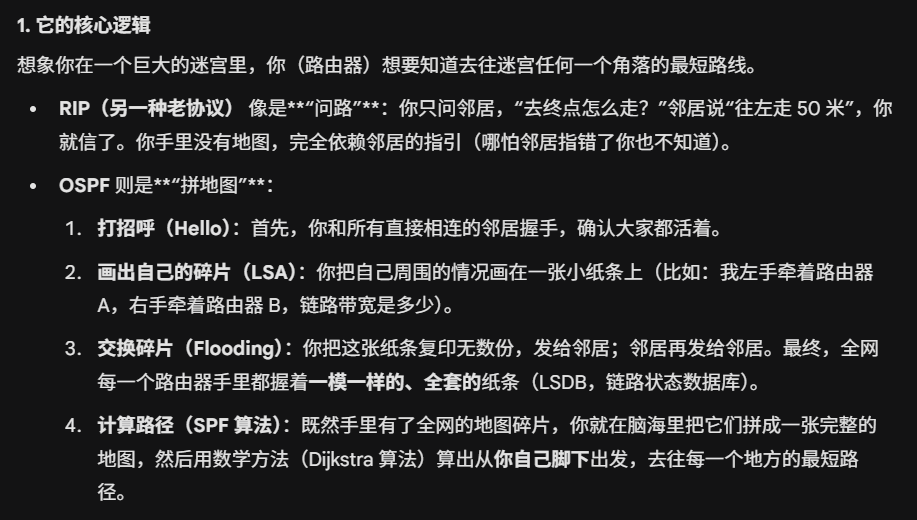
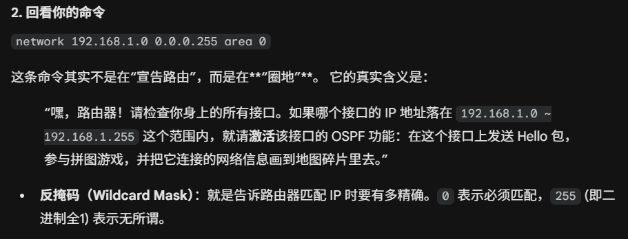
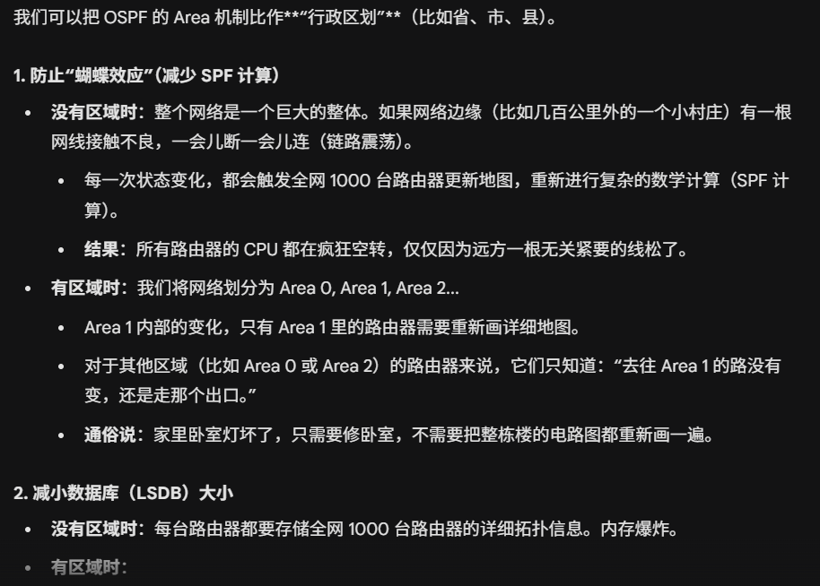
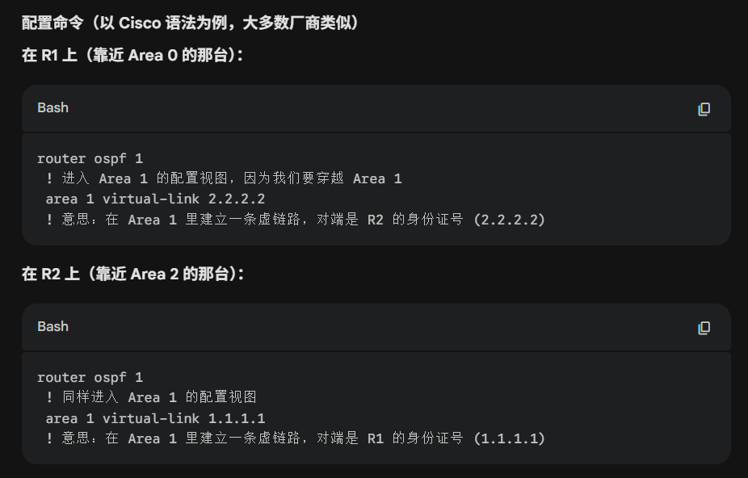
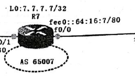
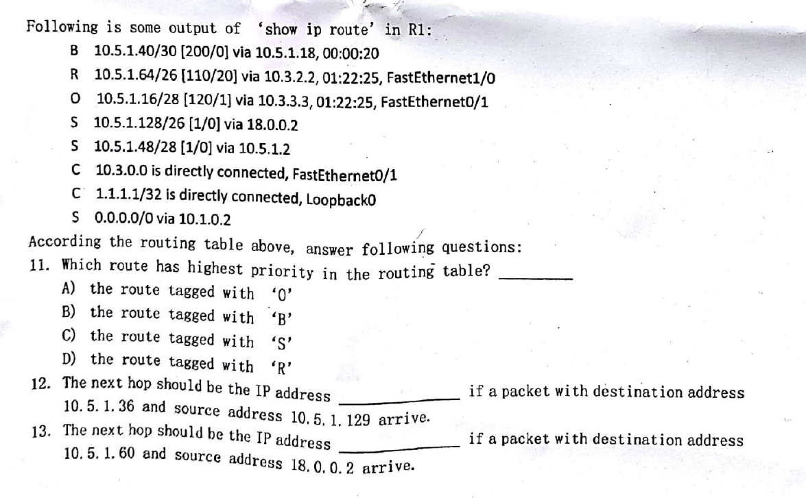

距离向量路由算法(DV算法
总距离 = 到邻居的距离 + 邻居到目的地的距离
路由表只要根据接收到的新信息,去选择下一条是哪个路由器的时候,代价最小就可以.如果不是邻居,就不考虑.只要信任邻居发来的信息就可以
进一步划分成四个等长的子网:
这个时候前24位是网络号,后八位是主机号.要分四个子网,我们需要从8位主机号里面分2位出来 子网掩码就变成了前26位1
11000000: 192
所以十进制掩码就是255.255.255.192
将256个地址平均分成4份的话,每个子网都要有64个地址,然后需要2位表示子网.也就是2的六次方=64(注意这里是000000111111 确实是2的六次方-1+1哈.)254 是可以用于标志主机的
针对第四个子网而言,网络地址是192.168.10.192 (也就是该段的第一个地址,代表身份)
广播地址是192.168.10.255 该段的最后一个地址 用于广播
掐头去尾,就可以得到193
网络配置分析与NAT
OSPF开放最短路径优先是一种让路由器自动计算“怎么走最近”的协议.不是靠邻居之间传递,而是把全网的地图都下载下来，然后用最短路径算法（Dijkstra 算法）自己算出最优路线。
它不看跳数，它看的是带宽（Cost，代价）。路越宽、网速越快，代价越低。
==AD 管理距离,是一个可信度指标,OSPF 的默认可信度数值是 110==
NAT
NAT网络地址转换,因为全球的公网 IP 不够用了，所以大家在家里、公司里都用内网 IP，出门时统一由路由器转换成公网 IP。
- 内网 IP（192.168.x.x）： 就像公司内部的分机号，在外面是打不通的，也没法直接上网。
- 公网 IP（203.0.x.x）： 就像公司的总机号码，全球唯一，可以上网。
然后路由器还会记录一个NAT转换条目表,以便于服务器回应的时候可以送达.
OSPF选routerid的顺序是
1.手动指定
2.loopback虚拟接口地址中的最大值
3.物理接口地址中的最大值
源ip:端口 目的地ip:端口
经过路由器转换后,将源ip改成路由器自己的公共ip,源端口改成分配的新端口,目的地不变,
路由器:ip层 负责找路 3
switch 能看懂mac地址 是数据链路层设备 2
hub集线器 只负责把电流传给所有人物理层设备 1
网络设备cisco
ip route <目标网段> <掩码> <下一跳IP或出接口>- 作用： 配置静态路由。告诉路由器去往某个网络该怎么走。
- redistribute <协议> <参数> subnets
- 路由重分发。将一种路由协议学习到的路由注入到另一种协议中（例如将 OSPF 的路由引入到 BGP 中）。
subnets关键字通常用于 OSPF，表示包含子网。
- 路由重分发。将一种路由协议学习到的路由注入到另一种协议中（例如将 OSPF 的路由引入到 BGP 中）。
ospf和bgp协议:
OSPF 协议 (内部网关协议)
router ospf <进程号>- 作用： 启动 OSPF 路由进程。
network <网络号> <反掩码> area <区域号>- 作用： 宣告网络。告诉 OSPF 在这个接口上运行，并将其所属的网段通告给邻居。注意这里通常用通配符掩码（反掩码）。
area <ID> virtual-link <Router-ID>- 作用： 配置 OSPF 虚链路。当非骨干区域（非 Area 0）无法直接物理连接到骨干区域时，通过此命令逻辑连接。
BGP 协议 (边界网关协议)
router bgp <AS号>- 作用： 启动 BGP 路由进程。AS 是自治系统号。
network <网络号> mask <掩码>- 作用： 在 BGP 中通告路由。注意 BGP 通常使用正掩码。 注意这里是子网！！！
neighbor <IP地址> remote-as <AS号>- 作用： 指定 BGP 邻居的 IP 和所在的自治系统号，建立对等体关系。通常ebgp用端口ip ibgp用loopback
neighbor <IP地址> update-source <接口>- 作用： 指定建立 BGP 邻居连接时使用的源接口。通常在建立 iBGP 邻居时，建议使用 Loopback 接口作为源，以保证连接稳定性。。就是说，设置ibgp是相互的
loopback
- 这个虚拟接口非常的稳定，因此routeid一般也会选用这个 因为其他接口有可能发生改变那要重新选routeid就不方便了。
- bgp配置的时候建邻居也最好用loopback建，
routeid
用来标识节点身份
用来选班长副班长
as路由跳数
- ospf默认是看带宽的,带宽越大，cost越小，就选这条。
- FastEthernet (f0/0, f0/1) 的带宽通常是 100 Mbps，OSPF Cost 是 1
- Serial (s2/0) 的带宽（默认 T1 标准）通常是 1.544 Mbps，OSPF Cost 是 64
配置题
二层交换机是用来连接同一个子网内的设备的.核心任务是隔离不同vlan.[负责把同一个 VLAN 里的电脑连起来，不同 VLAN 之间是绝缘的。]
- access 当电脑插到一个 Access VLAN 10 的口上，交换机就给它打上“我是 VLAN 10”的标签.这是进入vlan的大门,如果没有access,那是真的进入不了网络
- trunk 是不同交换机之间的运输管道，它保证 VLAN 10 的数据传过去还是 VLAN 10，绝不让它变成 VLAN 20。如果没有开 Trunk，只用一根网线连接两台交换机，那么这条线上只能跑 1 个 VLAN 的数据[默认是vlan1]。其他 VLAN 的数据根本过不去，直接被丢弃。
- 路由（路由器/三层交换机）： 只有它们才有能力把 VLAN 10 的数据拿出来，修改标签，转发给 VLAN 20。这叫“三层转发”。
vlan主要是在交换机上配,路由器和服务器也可以配.
一般配置trunk的情况就是 两台交换机之间,或者一台交换机连以台路由器(单臂路由).总之trunk就是用于通过多个vlan的线路.
access就是连接交换机和普通终端的,对他做一个vlan的改造.

ABR与area
ABR是在两个area之间的区域边界路由器 area border router
普通的路由器只属于一个区域,脑子里只有一张地图.ABR必须同时连接骨干区域和一个或者多个非骨干区域,
脑子里维护着多个完全隔离的数据库LSDB
关键任务是生成LSA ABR会阅读area1的所有精确的拓扑信息,然后计算出所有网段的路由,生成Network Summary LSA 发送给Area0 ,就是打包汇总
虚链路: 原则上所有非骨干区域都要连接到骨干区域,把骨干区域作为中转,不允许非骨干区域自己连通.如果area2到不了area0,那就在area1之间打一个虚拟链路去连接.配置之后,area1中间的路由器只负责转发数据包,而感觉不到这条链路的存在,对于area2来说就相当于直连了area0
- 要在中间穿越区域的两端路由器上配置
- R1：连接 Area 0 和 Area 1（Router ID: 1.1.1.1）
- R2：连接 Area 1 和 Area 2（Router ID: 2.2.2.2）
- 中间区域：Area 1
- 目标：让 R2 穿过 Area 1 连上 Area 0。

2. 为什么“直连”可以，“传话”就不行？
我们回到你的那个链条模型： Area 0 (北京) <---> ABR1 (你的角色) <---> Area 1 (河北) <---> ABR2 <---> Area 2 (内蒙)
你是 ABR1。你连接着 Area 0 和 Area 1。
情况 A：把 Area 1 (河北) 的事告诉 Area 0 (北京)
- 你的视角：因为你的一只脚就在河北（Area 1），你手里拿着的是河北的原始高清地图（1类、2类 LSA）。
- 动作：你看着原始地图，亲自写了一份简报（3类 LSA），递交给 Area 0。
- 结论：这是允许的。因为是你**“亲眼所见、亲自总结”**的。
情况 B：把 Area 2 (内蒙) 的事告诉 Area 0 (北京)
- 你的视角：你并不连接内蒙。你是听 ABR2 告诉你的。ABR2 在 Area 1 里发了一条简报（3类 LSA）说：“我有路去内蒙”。
- 动作：这时候，你作为 ABR1，在 Area 1 这一侧收到了这条简报。
- OSPF 的死规矩（LSA 转换规则）：
ABR 只负责把“原始地图（1类/2类）”转换成“简报（3类）”。 ABR 绝不负责把“别人的简报（3类）”再次转发给 Area 0。
这就是问题的关键！简报（3类 LSA）不能二手转发进骨干区域。
下一跳（Next Hop）永远是写“对方路由器的接口 IP 地址”（端口 IP）
IPv6

以这个为例，前80位是网段号，后48位是主机号。总共128位：
16禁止，一共8组数字，每组4个16进制数。
2001 : 0db8 : 0000 : 0000 : 0000 : 0000 : 1428 : 57ab
每组开头的 0 可以省略，但中间和结尾的不能省。
0064→ 简写为640db8→ 简写为db80000→ 简写为0
规则二：连续的一串 0，可以用双冒号::代替**
如果有一连串的0000:0000:0000，你可以直接把它们压缩成一个::。- 注意： 整个地址里只能出现一次
::（否则路由器不知道你在两个::里分别藏了几个 0）。
默认情况下，BGP根据什么条件决定最佳路由︖
在默认配置下,BGP最核⼼的判断条件是AS_PATH也就是AS路径长度,BGP会优先选择AS跳数最少的路径,如
果AS路径长度相同,后续会依次⽐较其他属性.
看路由表

路由器优先级是由管理距离AD决定的。数值越小